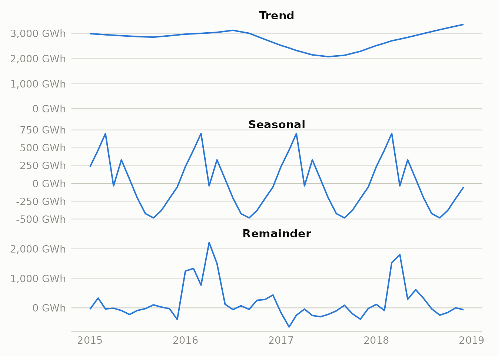
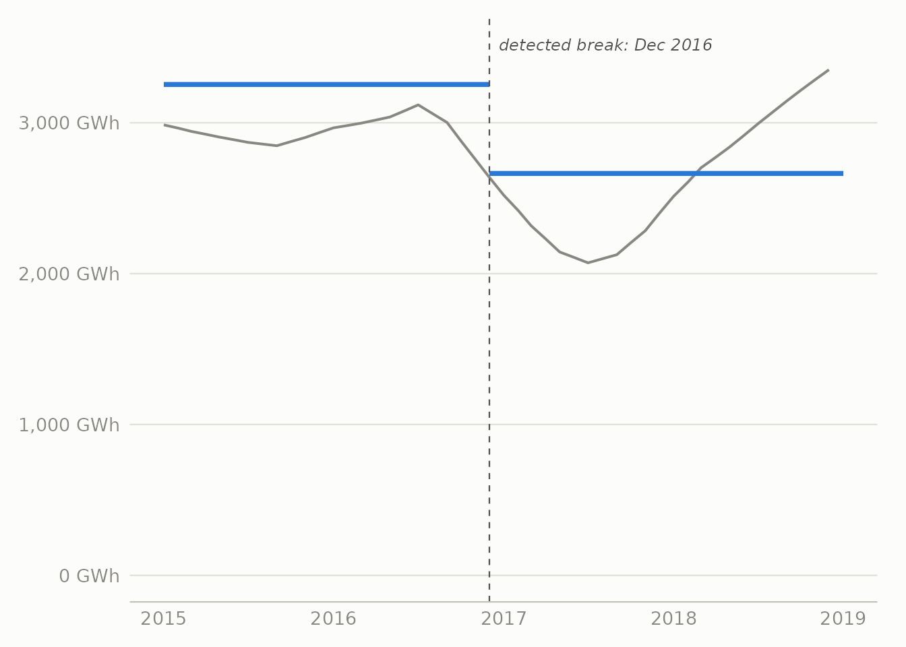
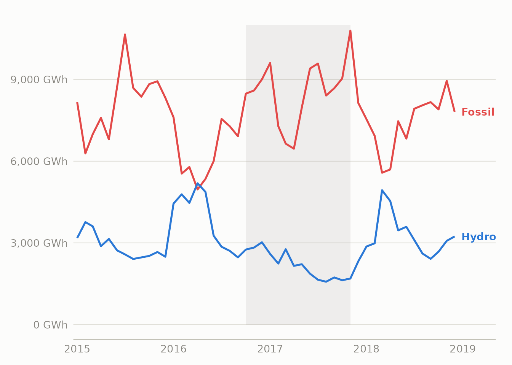
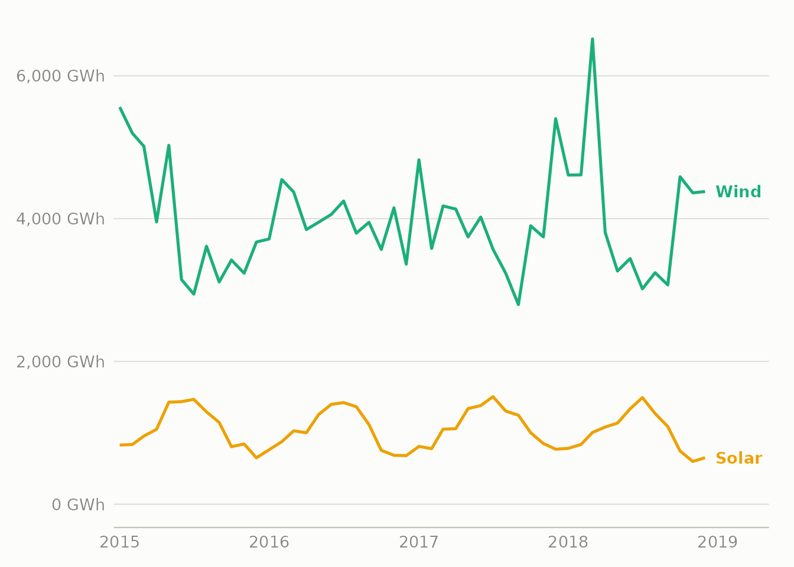
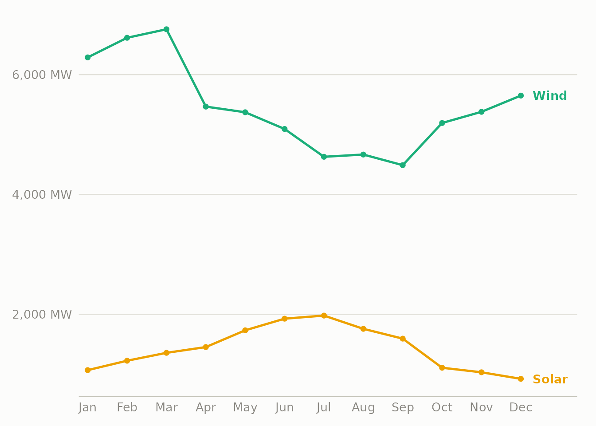
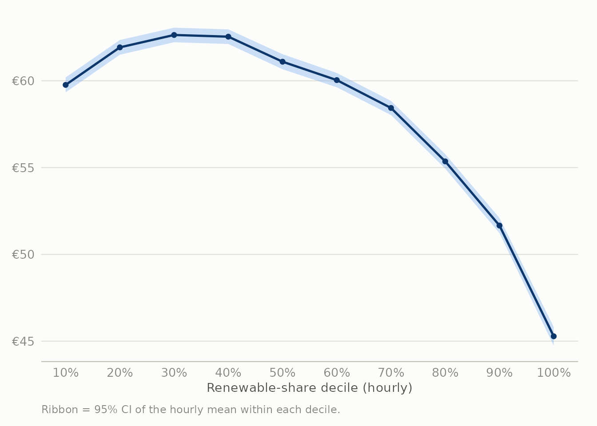
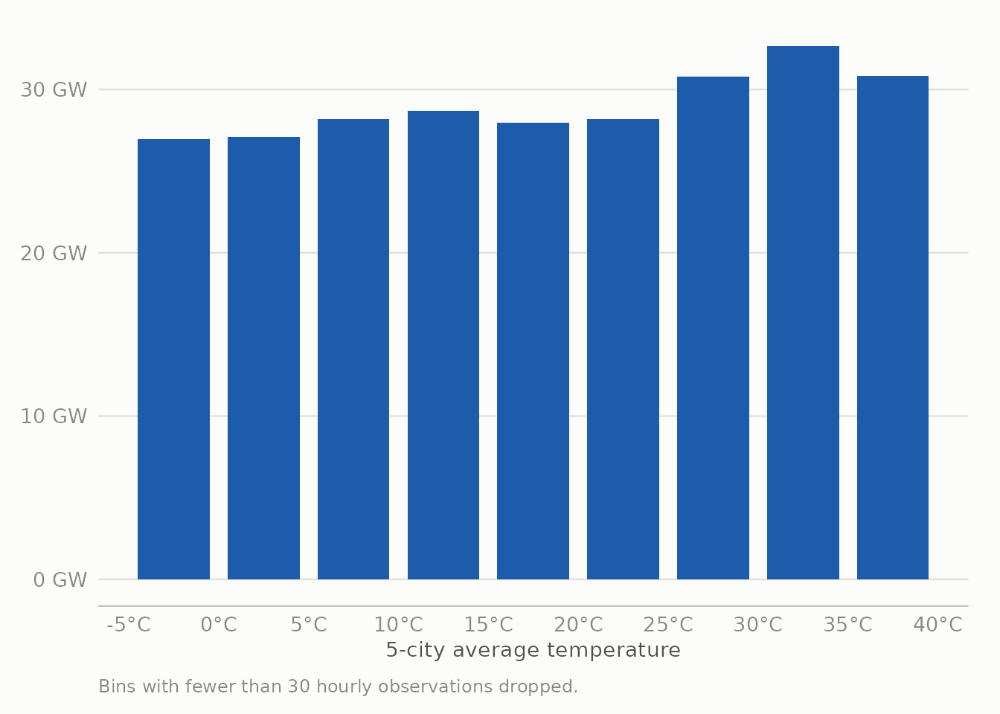

| Data quality checks | |
| Check | Value |
|---|---|
| Raw energy rows | 35064 |
| Energy rows after de-dup | 35064 |
| Raw weather rows | 178396 |
| Weather rows after de-dup | 175320 |
| Energy timestamps with any NA generation column (pre-fill) | 35064 |
| Date range | 2015-01-01 to 2018-12-31 |
How Spain Kept the Lights On
A deep dive into the generation mix and the renewables transition, 2015–2018
The data behind this story
This analysis uses the Kaggle Hourly energy demand generation and weather dataset: hourly ENTSO-E generation-by-source, day-ahead and actual load, and day-ahead/actual electricity prices for Spain, alongside hourly weather observations for five Spanish cities (Madrid, Barcelona, Valencia, Seville, Bilbao), spanning 2015-01-01 to 2018-12-31.
A few choices and known problems shape everything below:
- “Renewable” here means hydro (all forms) + wind + solar + biomass + other renewable + geothermal. Waste-to-energy is filed under “Other” rather than renewable, since ENTSO-E treats it as a mixed fuel. Counting it as renewable would raise the renewable share by a steady 1–2 points across the board without changing any of the trends.
- Weather comes from five cities, weighted by each city’s rough metro-area population, so Madrid and Barcelona count for much more of the “national temperature” than Bilbao. It isn’t weighted by where the power plants or wind farms actually sit. This works well as a stand-in for what drives demand (hot and cold weather push heating and cooling) but poorly for where supply is generated. The wind section further down and the map on the Dashboard show this limitation directly in the numbers.
- A few timestamps appear twice in both files, at the autumn clock-change hour. The duplicates are dropped, keeping the first one.
- Some sensor readings are broken: one weather column reports air pressure above 1,000,000 hPa. Where a few bad rows could distort a summary figure (the city temperature extremes on the dashboard map), I use the 1st and 99th percentiles instead of the true minimum and maximum.
- Four years, one country. Everything here is specific to Spain and to the years before 2019. Solar staying flat here reflects policy and price during this window, not a limit of the technology (see below).
Is the 2017 dip real, or just the usual seasonal pattern?
Spotting a dip by eye and drawing a box around it, as the chart above does, can be misleading. Hydro has its own strong yearly cycle (spring snowmelt, autumn rain), so before treating 2017 as genuinely unusual rather than the normal seasonal up-and-down, it helps to split monthly hydro output into three pieces: the long-term trend, the repeating seasonal pattern, and whatever is left over.
Show the R code
hydro_ts <- ts(monthly$hydro / 1000, start = c(2015, 1), frequency = 12)
hydro_stl <- stl(hydro_ts, s.window = "periodic", robust = TRUE)
stl_df <- tibble(
month = monthly$month,
Trend = as.numeric(hydro_stl$time.series[, "trend"]),
Seasonal = as.numeric(hydro_stl$time.series[, "seasonal"]),
Remainder = as.numeric(hydro_stl$time.series[, "remainder"])
) |>
pivot_longer(-month, names_to = "component", values_to = "gwh") |>
mutate(component = factor(component, levels = c("Trend", "Seasonal", "Remainder")))
p_stl <- ggplot(stl_df, aes(month, gwh)) +
geom_hline(yintercept = 0, color = "#c3c2b7", linewidth = 0.3) +
geom_line(color = source_colors[["Hydro"]], linewidth = 0.7) +
facet_wrap(~component, ncol = 1, scales = "free_y") +
scale_x_date(date_labels = "%Y", date_breaks = "1 year") +
scale_y_continuous(labels = label_comma(suffix = " GWh")) +
labs(x = NULL, y = NULL)
p_stl
The seasonal panel looks the same every year (that’s just the spring melt) and doesn’t explain the dip. The trend panel does: it sinks for more than a year and then recovers, by far more than the seasonal cycle can account for. That points to a real, lasting drop in the underlying level of hydro output.
To find when the shift happened without just trusting the eye, I ran a changepoint model (changepoint::cpt.mean, BinSeg) on the monthly series with the seasonal pattern already stripped out (trend + remainder). The model looks for the single point where the average level of hydro output shifts, and it does so without being given any information about when the drought happened:
Show the R code
seasadj <- as.numeric(hydro_stl$time.series[, "trend"] + hydro_stl$time.series[, "remainder"])
cpt_hydro <- cpt.mean(seasadj * 1000, method = "BinSeg", Q = 1, penalty = "BIC")
cpt_date <- monthly$month[cpts(cpt_hydro)]
cpt_means <- param.est(cpt_hydro)$mean / 1000
trend_df <- tibble(month = monthly$month, gwh = stl_df$gwh[stl_df$component == "Trend"])
seg_df <- tibble(
xmin = c(min(monthly$month), cpt_date),
xmax = c(cpt_date, max(monthly$month) + 31),
y = cpt_means
)
p_cpt <- ggplot() +
geom_line(data = trend_df, aes(month, gwh), color = ink_muted, linewidth = 0.7) +
geom_segment(data = seg_df, aes(x = xmin, xend = xmax, y = y, yend = y),
color = source_colors[["Hydro"]], linewidth = 1.3) +
geom_vline(aes(xintercept = cpt_date), linetype = "dashed", color = ink_secondary, linewidth = 0.4) +
annotate("text", x = cpt_date + 20, y = max(trend_df$gwh) * 1.05,
label = paste("detected break:", format(cpt_date, "%b %Y")),
hjust = 0, size = 3.2, color = ink_secondary, fontface = "italic") +
scale_x_date(date_labels = "%Y", date_breaks = "1 year") +
scale_y_continuous(labels = label_comma(suffix = " GWh"), limits = c(0, NA)) +
labs(x = NULL, y = NULL)
p_cpt
The model picks December 2016. Before that point hydro averaged about 3254 GWh per month; after it, about 2664 GWh per month, a 18% drop, found without feeding the model any news reports or rainfall figures. That date sits a couple of months after the drought was first reported, which fits: reservoirs empty slowly, so the drop in generation lags behind the drop in rainfall and arrives gradually rather than all at once. A model like this answers “where is the single clearest break,” which is the question I wanted. If you instead let it decide how many breaks there are, it finds none sharp enough to pass the usual significance thresholds, and that in itself is telling: the change was slow and gradual, not a sudden shock.
When the rain stops, gas fills the gap
Show the R code
sub_long <- monthly |>
transmute(month, Hydro = hydro / 1000, Fossil = fossil / 1000) |>
pivot_longer(-month, names_to = "source", values_to = "gwh")
sub_end <- sub_long |> filter(month == max(month))
sub_colors <- c(Hydro = source_colors[["Hydro"]], Fossil = source_colors[["Fossil"]])
p_sub <- ggplot(sub_long, aes(month, gwh, color = source)) +
annotate("rect", xmin = as.Date("2016-10-01"), xmax = as.Date("2017-11-01"),
ymin = 0, ymax = 11000, fill = ink_muted, alpha = 0.12) +
geom_line(linewidth = 0.9) +
geom_text(data = sub_end, aes(label = source), hjust = 0, nudge_x = 25, fontface = "bold", size = 3.6) +
scale_color_manual(values = sub_colors, guide = "none") +
scale_x_date(date_labels = "%Y", date_breaks = "1 year", expand = expansion(mult = c(0.01, 0.09))) +
scale_y_continuous(labels = label_comma(suffix = " GWh"), limits = c(0, 11000)) +
labs(x = NULL, y = NULL)
p_sub
From 2016 to 2017, hydro generation fell 44% while fossil generation rose 23%, almost mirroring each other. The grid also didn’t cover the gap with coal and gas in equal measure. The fossil total here is mostly natural gas, which can be turned up and down at short notice more easily than coal, so gas is what fills in when hydro runs short. In the short run, then, Spain’s renewable share mainly reflects how much it rained, not how much capacity is installed.
Solar stalled while wind crept up
Show the R code
sw_long <- monthly |>
transmute(month, Solar = solar / 1000, Wind = wind / 1000) |>
pivot_longer(-month, names_to = "source", values_to = "gwh")
sw_end <- sw_long |> filter(month == max(month))
sw_colors <- c(Solar = source_colors[["Solar"]], Wind = source_colors[["Wind"]])
p_sw <- ggplot(sw_long, aes(month, gwh, color = source)) +
geom_line(linewidth = 0.9) +
geom_text(data = sw_end, aes(label = source), hjust = 0, nudge_x = 25, fontface = "bold", size = 3.6) +
scale_color_manual(values = sw_colors, guide = "none") +
scale_x_date(date_labels = "%Y", date_breaks = "1 year", expand = expansion(mult = c(0.01, 0.09))) +
scale_y_continuous(labels = label_comma(suffix = " GWh"), limits = c(0, NA)) +
labs(x = NULL, y = NULL)
p_sw
Wind rose gradually and unevenly over the period. Solar didn’t rise at all, staying basically flat and even slipping a little (-6% from 2015 to 2018). It isn’t that Spain lacks sun; it has some of the best solar conditions in Europe. The likely reason is policy. Royal Decree 900/2015, Spain’s so-called “sun tax,” put grid charges on solar power that homes and businesses generated for their own use, from October 2015 until it was scrapped in October 2018, almost exactly the span of this dataset. The generation data alone can’t prove the tax caused the flatline, but the timing lines up closely, and this is the kind of cause a chart can’t reveal on its own.
Solar and wind take turns
Show the R code
moy <- hourly |>
mutate(moy = month(date, label = TRUE, abbr = TRUE)) |>
group_by(moy) |>
summarise(Solar = mean(solar, na.rm = TRUE), Wind = mean(wind, na.rm = TRUE), .groups = "drop") |>
pivot_longer(-moy, names_to = "source", values_to = "mw")
moy_end <- moy |> filter(moy == "Dec")
moy_colors <- c(Solar = source_colors[["Solar"]], Wind = source_colors[["Wind"]])
p_moy <- ggplot(moy, aes(as.integer(moy), mw, color = source, group = source)) +
geom_line(linewidth = 0.9) +
geom_point(size = 1.6) +
geom_text(data = moy_end, aes(label = source), hjust = 0, nudge_x = 0.3, fontface = "bold", size = 3.6) +
scale_color_manual(values = moy_colors, guide = "none") +
scale_x_continuous(breaks = 1:12, labels = levels(moy$moy), expand = expansion(mult = c(0.02, 0.1))) +
scale_y_continuous(labels = label_comma(suffix = " MW")) +
labs(x = NULL, y = NULL)
p_moy
Averaged over all four years by month, the two take turns cleanly. Wind is strongest in winter (Nov–Mar), when solar is weakest, and solar peaks in summer (Jun–Aug), when wind drops off. Their monthly correlation is r = -0.35, moderately negative. That’s useful for a grid: because they rise and fall in opposite seasons, running both together gives a steadier combined output than either one alone.
More renewables, cheaper power
Show the R code
price_decile <- hourly |>
filter(!is.na(renewable_share)) |>
mutate(decile = ntile(renewable_share, 10)) |>
group_by(decile) |>
summarise(avg_share = mean(renewable_share), avg_price = mean(price_actual, na.rm = TRUE),
se = sd(price_actual, na.rm = TRUE) / sqrt(n()), .groups = "drop")
p_price <- ggplot(price_decile, aes(decile, avg_price)) +
geom_ribbon(aes(ymin = avg_price - 1.96 * se, ymax = avg_price + 1.96 * se), fill = seq_blue[3], alpha = 0.35) +
geom_line(color = seq_blue[6], linewidth = 0.9) +
geom_point(color = seq_blue[6], size = 1.6) +
scale_x_continuous(breaks = 1:10, labels = function(x) paste0(x * 10, "%")) +
scale_y_continuous(labels = label_number(prefix = "€")) +
labs(x = "Renewable-share decile (hourly)", y = NULL,
caption = "Ribbon = 95% CI of the hourly mean within each decile.")
p_price
I sorted every hour into ten groups by renewable share and averaged the day-ahead price in each. The price falls steadily from group to group, not only between the two extremes: the hours with the most renewables averaged 45.3€/MWh, against 59.8€/MWh for the hours with the least, a gap of 24%. This is the merit-order effect. Wind, solar and hydro cost almost nothing to run once they’re built, so the more of them on the grid, the less need there is to run the most expensive gas plant. In Spain’s day-ahead auction the price everyone pays is set by the last and most expensive plant that has to run, so pushing that plant off the grid drags the whole price down.
What the drought cost, roughly
The merit-order link also lets us estimate the drought’s effect on price, not only on the generation mix. The idea: fit a smooth curve (loess) describing how price relates to renewable share across the whole dataset, then ask a what-if question. For each hour in 2017, what would the price have been if that hour’s renewable share had been higher, by the average amount it fell between 2016 and 2017?
Show the R code
price_fit <- loess(price_actual ~ renewable_share, data = hourly, span = 0.75)
y2016 <- hourly |> filter(year == 2016, !is.na(renewable_share))
y2017 <- hourly |> filter(year == 2017, !is.na(renewable_share))
share_gap <- mean(y2016$renewable_share, na.rm = TRUE) - mean(y2017$renewable_share, na.rm = TRUE)
y2017_cf <- y2017 |> mutate(cf_share = pmin(pmax(renewable_share + share_gap, 0), 1))
pred_actual <- predict(price_fit, newdata = tibble(renewable_share = y2017$renewable_share))
pred_cf <- predict(price_fit, newdata = tibble(renewable_share = y2017_cf$cf_share))
cf_actual_mean <- mean(pred_actual, na.rm = TRUE)
cf_counter_mean <- mean(pred_cf, na.rm = TRUE)
cf_saving_pct <- (cf_actual_mean - cf_counter_mean) / cf_actual_mean
cf_saving_total_eur <- (cf_actual_mean - cf_counter_mean) * sum(y2017$total_load_actual, na.rm = TRUE)That swap gives an average price of 57.3€/MWh in the what-if case, against the model’s 59.6€/MWh for what actually happened, a 3.8% reduction. Applied across all of 2017’s demand, that comes to roughly €573 million for the year. This is a rough estimate, not a precise bill. It holds demand and every other condition fixed and asks only the single what-if question; it doesn’t work out how the grid would really have run the extra hydro hour by hour, and it carries all the blind spots of a simple curve fit (see the Limitations section). What it does show reliably is the rough scale of the effect: the drought’s cost runs into the hundreds of millions of euros.
Three specific price events
The averages above are one way to see this; specific dates are another. Three that stand out:
- The most expensive single hour: October 23, 2017, 17:00, at 116.8€/MWh. Wind that hour was only 2.6 m/s, barely a breeze, and wind generation sat at just 2,532 MW against a total demand of 31,103 MW. Renewables made up just 23% of the mix.
- The most expensive stretch: January 19–26, 2017, in the middle of the drought. A cold, still week with wind speeds mostly under 3.5 m/s, evening demand pushing toward 39,000 MW, and day-ahead prices reaching 99€/MWh on January 25, among the highest daily averages in the whole four years.
- The cheapest day: February 27–28, 2016, during the good hydro year rather than the drought. Wind generation averaged around 12 GW across two straight days (some of the strongest in the dataset), the renewable share reached 68%, and the day-ahead price fell as low as 9.33€/MWh in the early hours of the 28th, about one-twelfth of the most expensive hour above.
All three point the same way as the rest of this analysis: prices in Spain’s day-ahead market rise and fall mainly with wind and rain, far more than with anything a forecaster could have predicted weeks ahead.
Temperature drives demand, and where the weather data falls short
Show the R code
temp_bin <- hourly |>
filter(!is.na(temp_c)) |>
mutate(tbin = cut(temp_c, breaks = seq(-5, 40, 5))) |>
group_by(tbin) |>
summarise(load = mean(total_load_actual, na.rm = TRUE), n = n(), .groups = "drop") |>
filter(n >= 30) |>
mutate(tmid = as.numeric(str_extract(tbin, "(?<=\\().+?(?=,)")) + 2.5)
p_temp <- ggplot(temp_bin, aes(tmid, load / 1000)) +
geom_col(fill = seq_blue[5], width = 4) +
scale_x_continuous(breaks = seq(-5, 40, 5), labels = function(x) paste0(x, "°C")) +
scale_y_continuous(labels = label_comma(suffix = " GW")) +
labs(x = "5-city average temperature", y = NULL,
caption = "Bins with fewer than 30 hourly observations dropped.")
p_temp
Demand is lowest around 5–10°C and climbs on either side: a gentle rise below it as people heat their homes, and a much steeper rise above about 25°C as air conditioning kicks in through Spain’s hot summers. This is the U-shape you’d expect.
Wind is where the weather data struggles. Hourly wind speed (again the 5-city average) correlates with wind generation at only r = 0.32, a real link but a weak one for what should be a fairly direct physical relationship. The reason is the limitation noted in the methodology: Madrid, Barcelona, Valencia, Seville and Bilbao are Spain’s five biggest cities, but they aren’t where the wind farms are, which is mostly Galicia, Aragón and Castilla y León. The map is helpful for reading temperature and demand, but it’s a poor guide to where wind power actually comes from, and this weak correlation is what shows that.
Limitations
- How “renewable” is defined is a judgment call (waste is left out). Changing it would shift the overall levels but not the trends discussed here.
- The weather data comes from five cities. It works well for the demand side but poorly for the supply side (wind), as the weak wind correlation above shows directly.
- This covers only Spain, 2015–2018. The solar story especially depends on the policy of that period and shouldn’t be read as “solar can’t grow in Spain.”
- The relationships here (price and renewables, temperature and demand, wind speed and wind generation) are associations within this dataset, not proof of cause and effect. The merit-order effect has solid economic backing on its own, but nothing here accounts for other factors like the time of day or the overall level of demand.
Reproducing this analysis
All cleaning happens in R/01_clean_data.R, reading the two raw Kaggle CSVs and writing the small processed files this page and the dashboard both read from data/processed/. The dashboard’s region-level wind capacity reference layer is built separately by R/02_geo_reference.R. Shared chart theme and the validated color palette live in R/theme_energy.R.